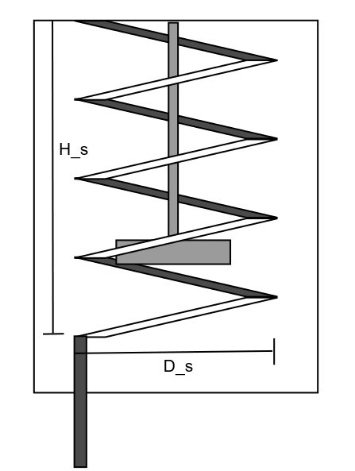

Enunciado
Usted desea enfriar \(500~\text{L}\) de Etilbenceno mediante un estanque agitado con un serpentín. Para esto utiliza como flujo refrigerante agua (\(40~\text{L/h}\) ) que entra a \(25~\text{°C}\) al serpentín y sale a \(40~\text{°C}\) . El diámetro del serpentín es \(D_s = 64~\text{cm}\) y la altura del serpentín \(H_s = 80~\text{cm}\) con un número de espiras igual a \(4\) como indica la figura. El diámetro interno del tubo del serpentín es de \(1~\text{cm}\) . En cuanto a las características del estanque, este se encuentra lleno completamento por el fluido, y tiene una altura de \(1~\text{m}\) con un agitador que opera a \(15~\text{RPM}\) . Su configuración es \(S_1 = 0.65\) . El objetivo de esta operación es enfriar Etilbenceno desde los \(120~\text{°C}\) hasta los \(105~\text{°C}\) .

Fig. 10 Estanque con serpentín
Usted cuenta con la tabla de las propiedades termofísicas de ambos fluidos a la temperatura promedio de entrada y salida.
Table 3 Propiedades termofísicas del Etilbenceno y el agua en función de su temperatura promedio.
Fluido
\(c_P~\text{(J/kg}\cdot\text{K)}\)
\(\rho~\text{(kg/m}^3\text{)}\)
\(\mu~\text{(Pa}\cdot\text{s)}\)
\(k~\text{(W/m}\cdot\text{K)}\)
Etilbenceno
2052.21
730.884
2.764\(\times\) 10\(^{-4}\)
0.1069
Agua
4180.35
994.635
7.714\(\times\) 10\(^{-4}\)
0.6175
Responda lo siguiente:
Encuentre el coeficiente de transferencia de calor para el fluido en el estanque \(h_o\) . Hint: Asuma que el grosor de la tubería del serpentín es despreciable.
Encuentre el coeficiente de transferencia de calor para el fluido en el serpentín \(h_s\) .
¿Cuántos días se demorará un lote para enfriar Etilbenceno?
Ver solución
Solución
Inciso 1
Escribimos todas las propiedades termofísicas del enunciado.
\[\begin{split}
\begin{aligned}
\rho_{c} &= 994.635 \; \;\textrm{(kg/m$^3$)}
&\mu_{c} &= 0.001 \; \;\textrm{(Pa$\cdot$s)}
&c_{Pc} &= 4180.350 \; \;\textrm{(J/kg$\cdot$K)}
\\[10pt]
k_{c} &= 0.618 \; \;\textrm{(W/m$\cdot$K)}
&\rho_{h} &= 730.884 \; \;\textrm{(kg/m$^3$)}
&\mu_{h} &= 0.000 \; \;\textrm{(Pa$\cdot$s)}
\\[10pt]
c_{Ph} &= 2052.210 \; \;\textrm{(J/kg$\cdot$K)}
&k_{h} &= 0.107 \; \;\textrm{(W/m$\cdot$K)}
\end{aligned}
\end{split}\]
Luego obtenemos todos los parámetros de dimensionamiento que nos faltan del reactor.
Ya que el estanque de encuentra lleno, sabemos su volumen. Asumiendo estanque cilíndrico:
\[
V = \pi\left(\frac{D_t}{2}\right)^2H
\]
\[\begin{split}
\begin{aligned}
V &= 0.500 \; \;\textrm{(m$^3$)}
\\[10pt]
H &= 1 \; \;\textrm{(m)}
\\[10pt]
D_{t} &= 2 \cdot \sqrt { \frac{ V }{ \pi \cdot H } } \\&= 2 \cdot \sqrt { \frac{ 0.500 }{ 3.142 \cdot 1 } } \\&= 0.798 \; \;\textrm{(m)}\\[10pt]
\end{aligned}
\end{split}\]
Con esta información, podemos también obtener el diámetro del estanque para luego obtener el número de Reynolds.
\[\begin{split}
\begin{aligned}
S_{1} &= 0.650 \;
\\[10pt]
D_{a} &= S_{1} \cdot D_{t} \\&= 0.650 \cdot 0.798 \\&= 0.519 \\[10pt]
\\[10pt]
N &= 15 \; \;\textrm{(RPM)}
\\[10pt]
\mathrm{Re}_{D} &= \frac{ \rho_{h} \cdot \left( \frac{ N }{ 60 } \right) \cdot \left( D_{a} \right) ^{ 2 } }{ \mu_{h} } \\&= \frac{ 730.884 \cdot \left( \frac{ 15 }{ 60 } \right) \cdot \left( 0.519 \right) ^{ 2 } }{ 0.000 } \\&= 177810.442 \\[10pt]
\\[10pt]
\mathrm{Pr}_{h} &= \frac{ \mu_{h} \cdot c_{Ph} }{ k_{h} } \\&= \frac{ 0.000 \cdot 2052.210 }{ 0.107 } \\&= 5.306 \\[10pt]
\end{aligned}
\end{split}\]
Luego para estanques agitados con serpentín asumiendo \(\mu \approx \mu_s\) :
\[
Nu_D = 0.17\left(Re_D\right)^{0.67}Pr^{0.37}\left(\frac{D_a}{D_t}\right)^{0.1}\left(\frac{d}{D_t}\right)^{0.5}
\]
\[\begin{split}
\begin{aligned}
d &= \frac{ 1 }{ 100 } &= 0.010 \; \;\textrm{(m)}
\\[10pt]
\mathrm{Nusselt}_{D} &= 0.17 \cdot \left( \mathrm{Re}_{D} \right) ^{ 0.67 } \cdot \left( \mathrm{Pr}_{h} \right) ^{ 0.37 } \cdot \left( \frac{ D_{a} }{ D_{t} } \right) ^{ 0.1 } \cdot \left( \frac{ d }{ D_{t} } \right) ^{ 0.5 } \\&= 0.17 \cdot \left( 177810.442 \right) ^{ 0.67 } \cdot \left( 5.306 \right) ^{ 0.37 } \cdot \left( \frac{ 0.519 }{ 0.798 } \right) ^{ 0.1 } \cdot \left( \frac{ 0.010 }{ 0.798 } \right) ^{ 0.5 } \\&= 111.278 \\[10pt]
\end{aligned}
\end{split}\]
\[
h_o = \frac{Nu_Dk_h}{d}
\]
\[\begin{split}
\begin{aligned}
h_{o} &= \frac{ \mathrm{Nusselt}_{D} \cdot k_{h} }{ d } \\&= \frac{ 111.278 \cdot 0.107 }{ 0.010 } \\&= 1189.566 \; \;\textrm{(W/m$^2\cdot$K)}\\[10pt]
\end{aligned}
\end{split}\]
Inciso 2
Para el serpentín, las correlaciones para obtener los números adimensionales son los mismos que para flujos en tuberías. Siempre y cuando, este flujo sea turbulento.
\[
Re_D = \frac{d \dot{m}_c}{\mu A}
\]
\[\begin{split}
\begin{aligned}
F &= 40 \; \;\textrm{(L/h)}
\\[10pt]
m_{c} &= \frac{ F }{ \rho_{c} } \cdot \frac{1} { 1000 } \cdot 3600 \\&= \frac{ 40 }{ 994.635000 } \cdot \frac{1} { 1000 } \cdot 3600 \\&= 0.144777 \; \;\textrm{(kg/s)}\\[10pt]
\\[10pt]
A &= \pi \cdot \left( \frac{ d }{ 2 } \right) ^{ 2 } \\&= 3.141593 \cdot \left( \frac{ 0.010000 }{ 2 } \right) ^{ 2 } \\&= 0.000079 \; \;\textrm{(m$^2$)}\\[10pt]
\\[10pt]
\mathrm{Re}_{D} &= \frac{ d \cdot m_{c} }{ \mu_{c} \cdot A } \\&= \frac{ 0.010000 \cdot 0.144777 }{ 0.000771 \cdot 0.000079 } \\&= 23896.221695 \\[10pt]
\\[10pt]
\mathrm{Pr}_{c} &= \frac{ \mu_{c} \cdot c_{Pc} }{ k_{c} } \\&= \frac{ 0.000771 \cdot 4180.350000 }{ 0.617500 } \\&= 5.222222 \\[10pt]
\end{aligned}
\end{split}\]
Al ser turbulento, utilizamos Sieder-Tate asumiendo \(\mu \approx \mu_s\) :
\[
Nu_D = 0.027Re_D^{0.8}Pr^{1/3}
\]
Luego el coeficiente de transferencia de calor para el serpentín será el mismo para flujos turbulentos en tuberías, pero con un factor de corrección:
\[
FC = 1 + 1.75\frac{d}{r_s}
\]
Luego:
\[
h_s = FC\frac{Nu_Dk_c}{d}
\]
\[\begin{split}
\begin{aligned}
D_{s} &= \frac{ 64 }{ 100 } &= 0.640 \; \;\textrm{(m)}
\\[10pt]
r_{s} &= \frac{ D_{s} }{ 2 } \\&= \frac{ 0.640 }{ 2 } \\&= 0.320 \\[10pt]
\\[10pt]
\mathrm{Nusselt}_{D} &= 0.027 \cdot \left( \mathrm{Re}_{D} \right) ^{ 0.8 } \cdot \left( \mathrm{Pr}_{c} \right) ^{ \left( \frac{ 1 }{ 3 } \right) } \\&= 0.027 \cdot \left( 23896.222 \right) ^{ 0.8 } \cdot \left( 5.222 \right) ^{ \left( \frac{ 1 }{ 3 } \right) } \\&= 149.043 \\[10pt]
\\[10pt]
\mathrm{FC} &= 1 + 1.75 \cdot \left( \frac{ d }{ r_{s} } \right) \\&= 1 + 1.75 \cdot \left( \frac{ 0.010 }{ 0.320 } \right) \\&= 1.055 \\[10pt]
\\[10pt]
h_{s} &= \mathrm{FC} \cdot \frac{ \mathrm{Nusselt}_{D} \cdot k_{c} }{ d } \\&= 1.055 \cdot \frac{ 149.043 \cdot 0.618 }{ 0.010 } \\&= 9706.732 \; \;\textrm{(W/m$^2\cdot$K)}\\[10pt]
\end{aligned}
\end{split}\]
Inciso 3
Ya que el grosor del tubo del serpentín es despreciable, tampoco presenta resistencia a la transferencia de calor.
\[
\frac{1}{U} = \left(\frac{1}{h_o} + \frac{1}{h_s}\right)
\]
Por otro lado, el área de transferencia de calor para un serpentín será:
\[
A_t = \pi d\left(\sqrt{4\pi^2n^2r_s^2 + H_s^2}\right)
\]
Del enunciado recuperamos los parámetros de dimensionamiento del serpentín.
\[
\begin{aligned}
H_{s} &= 0.800 \; \;\textrm{(m)}
&n &= 4 \;
\end{aligned}
\]
\[\begin{split}
\begin{aligned}
U &= \left( \frac{ 1 }{ h_{o} } + \frac{ 1 }{ h_{s} } \right) ^{ \left( - 1 \right) } \\&= \left( \frac{ 1 }{ 1189.566 } + \frac{ 1 }{ 9706.732 } \right) ^{ \left( - 1 \right) } \\&= 1059.700 \; \;\textrm{(W/m$^2\cdot$K)}\\[10pt]
\\[10pt]
A_{t} &= \pi \cdot d \cdot \sqrt { 2 \cdot \left( \pi \right) ^{ 2 } \cdot \left( n \right) ^{ 2 } \cdot \left( r_{s} \right) ^{ 2 } + \left( H_{s} \right) ^{ 2 } } \\&= 3.142 \cdot 0.010 \cdot \sqrt { 2 \cdot \left( 3.142 \right) ^{ 2 } \cdot \left( 4 \right) ^{ 2 } \cdot \left( 0.320 \right) ^{ 2 } + \left( 0.800 \right) ^{ 2 } } \\&= 0.180 \; \;\textrm{(m$^2$)}\\[10pt]
\end{aligned}
\end{split}\]
Ya que estamos en un proceso de enfriamiento el tiempo del proceso tenemos las siguientes ecuaciones para representar el tiempo de enfriamiento. En donde, se enfría un líquido desde \(T_0\) hasta \(T\) .
\[
\Delta T_{ml} = \frac{T_{cs}-T_{ce}}{\ln\left(\frac{T-T_{ce}}{T-T_{cs}}\right)}
\]
\[
K_{ME} = exp\left(-\frac{UA}{\dot{m}_cc_{P,c}}\right)
\]
\[
t = \frac{Mc_{P,h}/c_{P,c}}{\dot{m}_c\left(1-K_{ME}\right)}\ln\left(\frac{T_0-T_{ce}}{T-T_{ce}}\right)
\]
Procedemos a calcular lo pedido.
\[\begin{split}
\begin{aligned}
T_{0} &= 393.150 \; \;\textrm{(K)}
&T &= 378.150 \; \;\textrm{(K)}
&T_{ce} &= 298.150 \; \;\textrm{(K)}
\\[10pt]
T_{cs} &= 313.150 \; \;\textrm{(K)}
&M &= 365.442 \; \;\textrm{(kg)}
\end{aligned}
\end{split}\]
\[\begin{split}
\begin{aligned}
\mathrm{dT}_{ml} &= \frac{ T_{cs} - T_{ce} }{ \ln \left( \frac{ T - T_{ce} }{ T - T_{cs} } \right) } \\&= \frac{ 313.15000 - 298.15000 }{ \ln \left( \frac{ 378.15000 - 298.15000 }{ 378.15000 - 313.15000 } \right) } \\&= 72.24064 \\[10pt]
\\[10pt]
K_{ME} &= \exp \left( \frac{ \left( - \left( U \cdot A \right) \right) }{ m_{c} \cdot c_{Pc} } \right) \\&= \exp \left( \frac{ \left( - \left( 1059.69951 \cdot 0.00008 \right) \right) }{ 0.14478 \cdot 4180.35000 } \right) \\&= 0.99986 \\[10pt]
\\[10pt]
t &= \frac{ M \cdot \frac{ c_{Ph} }{ c_{Pc} } }{ m_{c} \cdot \left( 1 - K_{ME} \right) } \cdot \ln \left( \frac{ T_{0} - T_{ce} }{ T - T_{ce} } \right) \cdot \frac{ 1 }{ 3600 \cdot 24 } \\&= \frac{ 365.44200 \cdot \frac{ 2052.21000 }{ 4180.35000 } }{ 0.14478 \cdot \left( 1 - 0.99986 \right) } \cdot \ln \left( \frac{ 393.15000 - 298.15000 }{ 378.15000 - 298.15000 } \right) \cdot \frac{ 1 }{ 3600 \cdot 24 } \\&= 17.92396 \; \;\textrm{(días)}\\[10pt]
\end{aligned}
\end{split}\]